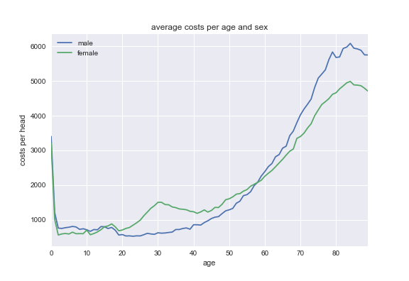
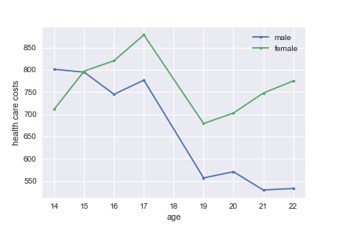
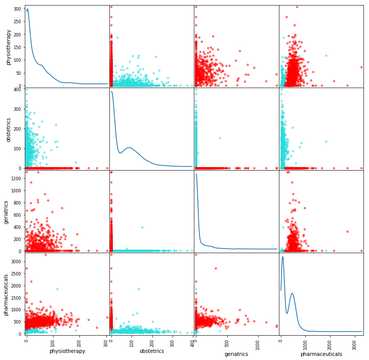

Plotting health data with python
In this notebook we use publicly available health care data to illustrate the use of some python libraries. We will plot health care expenditure per municipality and how health care varies with age. In the process you will see how libraries like pandas and matplotlib work.
1 Health care expenditures per municipality
We start with health care data on the level of municipalities. We will plot how health care expenditure varies with location.
Some institutional background:
- in the Netherlands health insurance is mandatory
- people aged 18 or older face a deductible of 365 euros in 2014; no deductible for people below 18
- the deductible applies to a number of cost categories in the "basic packages"; see below
- people can –voluntarily– increase their deductible with 100, 200, 300, 400 or 500 euro; but our data has no information on this
1.1 loading the data
The following code block loads the data. We use data from Vektis. We import the data, which is a 'csv' file with ";" as separator between columns. We also import the pandas library.
Then we inspect the first ten rows of our data set.
# First lets clear all previous python imports and variables by resetting the python kernel. %reset -f import pandas as pd df_gemeente = pd.read_csv('Vektis_Open_Databestand_Zorgverzekeringswet_2014_-_gemeente.csv', sep = ';') df_gemeente.head(10)
GESLACHT LEEFTIJDSKLASSE GEMEENTENAAM AANTAL_BSN AANTAL_VERZEKERDEJAREN \ 0 NaN NaN NaN 298383 185664.92 1 M 0 t/m 4 jaar AA EN HUNZE 507 468.83 2 M 0 t/m 4 jaar AALBURG 428 387.28 3 M 0 t/m 4 jaar AALSMEER 876 790.65 4 M 0 t/m 4 jaar AALTEN 667 600.00 5 M 0 t/m 4 jaar ACHTKARSPELEN 810 737.03 6 M 0 t/m 4 jaar ALBLASSERDAM 637 561.21 7 M 0 t/m 4 jaar ALBRANDSWAARD 735 663.22 8 M 0 t/m 4 jaar ALKMAAR 2967 2660.93 9 M 0 t/m 4 jaar ALMELO 1906 1714.63
KOSTEN_MEDISCH_SPECIALISTISCHE_ZORG KOSTEN_FARMACIE \ 0 48661669.94 9219422.33 1 473370.77 43305.49 2 340442.37 23395.86 3 932841.57 54597.52 4 515879.78 43516.71 5 766456.80 88084.16 6 1252440.29 140225.60 7 927635.48 114174.07 8 4005510.06 258936.51 9 3518922.31 254976.19
KOSTEN_TWEEDELIJNS_GGZ KOSTEN_HUISARTS_INSCHRIJFTARIEF \ 0 7475481.90 4092492.35 1 14056.81 26239.56 2 5555.83 21673.15 3 34355.66 43971.27 4 2404.19 33749.10 5 6681.81 41477.79 6 9715.96 30705.39 7 2043.52 37028.38 8 22599.87 147227.49 9 87437.11 96757.71
KOSTEN_HUISARTS_CONSULT … KOSTEN_PARAMEDISCHE_ZORG_OVERIG \ 0 1388439.07 … 290539.66 1 12829.29 … 13783.67 2 9417.98 … 15297.60 3 22413.37 … 14105.95 4 18472.64 … 31816.27 5 19157.34 … 30454.49 6 15936.39 … 19202.75 7 21611.09 … 30449.94 8 71141.10 … 67205.26 9 51693.62 … 81595.14
KOSTEN_ZIEKENVERVOER_ZITTEND KOSTEN_ZIEKENVERVOER_LIGGEND \ 0 210313.33 1398151.05 1 638.08 5004.86 2 315.06 6155.09 3 0.00 20465.44 4 1173.82 6282.28 5 204.30 17011.84 6 0.00 11421.05 7 0.00 13027.62 8 4086.51 70806.48 9 7742.31 32328.75
KOSTEN_KRAAMZORG KOSTEN_VERLOSKUNDIGE_ZORG \ 0 1286545.5 1072906.37 1 0.0 0.00 2 0.0 0.00 3 0.0 0.00 4 0.0 0.00 5 0.0 0.00 6 0.0 0.00 7 0.0 0.00 8 0.0 0.00 9 0.0 0.00
KOSTEN_GENERALISTISCHE_BASIS_GGZ KOSTEN_GRENSOVERSCHRIJDENDE_ZORG \ 0 490222.49 21946526.34 1 0.00 2571.36 2 0.00 186.08 3 157.44 1743.72 4 1422.67 62.75 5 0.00 206.11 6 0.00 662.75 7 0.00 1422.76 8 168.55 7153.37 9 3777.82 2492.23
KOSTEN_EERSTELIJNS_ONDERSTEUNING KOSTEN_GERIATRISCHE_REVALIDATIEZORG \ 0 523.35 351533.29 1 31.05 0.00 2 5.40 0.00 3 12.60 0.00 4 3.60 0.00 5 955.80 0.00 6 11.25 0.00 7 7.20 0.00 8 36.90 0.00 9 27.45 0.00
KOSTEN_OVERIG 0 849751.44 1 186.03 2 135.30 3 13285.23 4 107.40 5 453.66 6 165.60 7 368.37 8 2707.21 9 682.51
[10 rows x 24 columns]
| GESLACHT | LEEFTIJDSKLASSE | GEMEENTENAAM | AANTAL_BSN | AANTAL_VERZEKERDEJAREN | KOSTEN_MEDISCH_SPECIALISTISCHE_ZORG | KOSTEN_FARMACIE | KOSTEN_TWEEDELIJNS_GGZ | KOSTEN_HUISARTS_INSCHRIJFTARIEF | KOSTEN_HUISARTS_CONSULT | ... | KOSTEN_PARAMEDISCHE_ZORG_OVERIG | KOSTEN_ZIEKENVERVOER_ZITTEND | KOSTEN_ZIEKENVERVOER_LIGGEND | KOSTEN_KRAAMZORG | KOSTEN_VERLOSKUNDIGE_ZORG | KOSTEN_GENERALISTISCHE_BASIS_GGZ | KOSTEN_GRENSOVERSCHRIJDENDE_ZORG | KOSTEN_EERSTELIJNS_ONDERSTEUNING | KOSTEN_GERIATRISCHE_REVALIDATIEZORG | KOSTEN_OVERIG | |
|---|---|---|---|---|---|---|---|---|---|---|---|---|---|---|---|---|---|---|---|---|---|
| 0 | NaN | NaN | NaN | 298383 | 185664.92 | 48661669.94 | 9219422.33 | 7475481.90 | 4092492.35 | 1388439.07 | ... | 290539.66 | 210313.33 | 1398151.05 | 1286545.5 | 1072906.37 | 490222.49 | 21946526.34 | 523.35 | 351533.29 | 849751.44 |
| 1 | M | 0 t/m 4 jaar | AA EN HUNZE | 507 | 468.83 | 473370.77 | 43305.49 | 14056.81 | 26239.56 | 12829.29 | ... | 13783.67 | 638.08 | 5004.86 | 0.0 | 0.00 | 0.00 | 2571.36 | 31.05 | 0.00 | 186.03 |
| 2 | M | 0 t/m 4 jaar | AALBURG | 428 | 387.28 | 340442.37 | 23395.86 | 5555.83 | 21673.15 | 9417.98 | ... | 15297.60 | 315.06 | 6155.09 | 0.0 | 0.00 | 0.00 | 186.08 | 5.40 | 0.00 | 135.30 |
| 3 | M | 0 t/m 4 jaar | AALSMEER | 876 | 790.65 | 932841.57 | 54597.52 | 34355.66 | 43971.27 | 22413.37 | ... | 14105.95 | 0.00 | 20465.44 | 0.0 | 0.00 | 157.44 | 1743.72 | 12.60 | 0.00 | 13285.23 |
| 4 | M | 0 t/m 4 jaar | AALTEN | 667 | 600.00 | 515879.78 | 43516.71 | 2404.19 | 33749.10 | 18472.64 | ... | 31816.27 | 1173.82 | 6282.28 | 0.0 | 0.00 | 1422.67 | 62.75 | 3.60 | 0.00 | 107.40 |
| 5 | M | 0 t/m 4 jaar | ACHTKARSPELEN | 810 | 737.03 | 766456.80 | 88084.16 | 6681.81 | 41477.79 | 19157.34 | ... | 30454.49 | 204.30 | 17011.84 | 0.0 | 0.00 | 0.00 | 206.11 | 955.80 | 0.00 | 453.66 |
| 6 | M | 0 t/m 4 jaar | ALBLASSERDAM | 637 | 561.21 | 1252440.29 | 140225.60 | 9715.96 | 30705.39 | 15936.39 | ... | 19202.75 | 0.00 | 11421.05 | 0.0 | 0.00 | 0.00 | 662.75 | 11.25 | 0.00 | 165.60 |
| 7 | M | 0 t/m 4 jaar | ALBRANDSWAARD | 735 | 663.22 | 927635.48 | 114174.07 | 2043.52 | 37028.38 | 21611.09 | ... | 30449.94 | 0.00 | 13027.62 | 0.0 | 0.00 | 0.00 | 1422.76 | 7.20 | 0.00 | 368.37 |
| 8 | M | 0 t/m 4 jaar | ALKMAAR | 2967 | 2660.93 | 4005510.06 | 258936.51 | 22599.87 | 147227.49 | 71141.10 | ... | 67205.26 | 4086.51 | 70806.48 | 0.0 | 0.00 | 168.55 | 7153.37 | 36.90 | 0.00 | 2707.21 |
| 9 | M | 0 t/m 4 jaar | ALMELO | 1906 | 1714.63 | 3518922.31 | 254976.19 | 87437.11 | 96757.71 | 51693.62 | ... | 81595.14 | 7742.31 | 32328.75 | 0.0 | 0.00 | 3777.82 | 2492.23 | 27.45 | 0.00 | 682.51 |
10 rows × 24 columns
We are going to be interested in total health care costs under the deductible. Hence, we specify the categories that fall under the deductible in the Netherlands in 2014. Further, we want to do this analysis in English. So we relabel the relevant column names into English.
We specify a list of columns (cost categories) across which we want to add costs. As the costs are total costs (not costs per head) we can indeed add these numbers. We leave out mental health care as it features its own financial incentives.
We specify the name of a new variable health_expenditure_under_deductible which is calculated on the list of columns specified and then the function that needs to be applied – sum in this case. Finally, we specify that the function needs to be applied row-wise: axis=1.
Then we give a dictionary with "old" variable names (in Dutch) and the "new" names in English for the variables where we want to use the English names.
cost_categories_under_deductible = ['KOSTEN_MEDISCH_SPECIALISTISCHE_ZORG', 'KOSTEN_MONDZORG', 'KOSTEN_FARMACIE', 'KOSTEN_HULPMIDDELEN', 'KOSTEN_PARAMEDISCHE_ZORG_FYSIOTHERAPIE', 'KOSTEN_PARAMEDISCHE_ZORG_OVERIG', 'KOSTEN_ZIEKENVERVOER_ZITTEND', 'KOSTEN_ZIEKENVERVOER_LIGGEND', 'KOSTEN_GRENSOVERSCHRIJDENDE_ZORG', 'KOSTEN_GERIATRISCHE_REVALIDATIEZORG', 'KOSTEN_OVERIG'] df_gemeente['health_expenditure_under_deductible'] = df_gemeente[cost_categories_under_deductible].sum(axis=1) df_gemeente = df_gemeente.rename_axis({ 'GESLACHT':'sex', 'LEEFTIJDSKLASSE':'age', 'GEMEENTENAAM':'MUNICIPALITY', 'AANTAL_BSN':'number_citizens', 'KOSTEN_MEDISCH_SPECIALISTISCHE_ZORG':'hospital_care', 'KOSTEN_FARMACIE':'pharmaceuticals', 'KOSTEN_TWEEDELIJNS_GGZ':'mental_care', 'KOSTEN_HUISARTS_INSCHRIJFTARIEF':'GP_capitation', 'KOSTEN_HUISARTS_CONSULT':'GP_fee_for_service', 'KOSTEN_HUISARTS_OVERIG':'GP_other', 'KOSTEN_MONDZORG':'dental care', 'KOSTEN_PARAMEDISCHE_ZORG_FYSIOTHERAPIE':'physiotherapy', 'KOSTEN_KRAAMZORG':'maternity_care', 'KOSTEN_VERLOSKUNDIGE_ZORG':'obstetrics' }, axis='columns') df_gemeente.dtypes
We drop the columns that we no longer need.
df_gemeente.drop(['AANTAL_VERZEKERDEJAREN', 'KOSTEN_HULPMIDDELEN', 'KOSTEN_PARAMEDISCHE_ZORG_OVERIG', 'KOSTEN_ZIEKENVERVOER_ZITTEND', 'KOSTEN_ZIEKENVERVOER_LIGGEND', 'KOSTEN_GRENSOVERSCHRIJDENDE_ZORG', 'KOSTEN_GERIATRISCHE_REVALIDATIEZORG', 'KOSTEN_OVERIG', 'KOSTEN_GENERALISTISCHE_BASIS_GGZ', 'KOSTEN_EERSTELIJNS_ONDERSTEUNING'],inplace=True,axis=1) df_gemeente.columns
Let's look again at the first couple of lines of our data set. The head method presents the first 5 line as default.
df_gemeente.head()
We are not interested in the first line, so we drop it. Indeed, our data set now starts with the first municipality 'AA EN HUNZE'.
df_gemeente.drop(df_gemeente.index[[0]], inplace=True)
df_gemeente.head()
sex age MUNICIPALITY number_citizens hospital_care \ 1 M 0 t/m 4 jaar AA EN HUNZE 507 473370.77 2 M 0 t/m 4 jaar AALBURG 428 340442.37 3 M 0 t/m 4 jaar AALSMEER 876 932841.57 4 M 0 t/m 4 jaar AALTEN 667 515879.78 5 M 0 t/m 4 jaar ACHTKARSPELEN 810 766456.80
pharmaceuticals mental_care GP_capitation GP_fee_for_service GP_other \ 1 43305.49 14056.81 26239.56 12829.29 36034.65 2 23395.86 5555.83 21673.15 9417.98 20159.19 3 54597.52 34355.66 43971.27 22413.37 61629.32 4 43516.71 2404.19 33749.10 18472.64 46720.61 5 88084.16 6681.81 41477.79 19157.34 53633.01
dental care physiotherapy maternity_care obstetrics \ 1 9311.14 15968.80 0.0 0.0 2 7213.81 6135.05 0.0 0.0 3 19042.00 20086.43 0.0 0.0 4 12909.41 20762.75 0.0 0.0 5 16695.10 23423.96 0.0 0.0
health_expenditure_under_deductible 1 576750.31 2 406856.55 3 1093297.37 4 652523.86 5 954494.16
Now let's consider data types.
df_gemeente.dtypes
sex object age object MUNICIPALITY object number_citizens int64 hospital_care float64 pharmaceuticals float64 mental_care float64 GP_capitation float64 GP_fee_for_service float64 GP_other float64 dental care float64 physiotherapy float64 maternity_care float64 obstetrics float64 health_expenditure_under_deductible float64 dtype: object
The first three variables are seen as "object", that is, strings. This is fine for MUNICIPALITY but is not quite right for sex and age as these are categories. So let's relabel their types.
df_gemeente['sex'] = df_gemeente['sex'].astype('category') df_gemeente['age'] = df_gemeente['age'].astype('category') df_gemeente.info()
<class 'pandas.core.frame.DataFrame'> Int64Index: 14808 entries, 1 to 14808 Data columns (total 15 columns): sex 14808 non-null category age 14808 non-null category MUNICIPALITY 14808 non-null object number_citizens 14808 non-null int64 hospital_care 14808 non-null float64 pharmaceuticals 14808 non-null float64 mental_care 14808 non-null float64 GP_capitation 14808 non-null float64 GP_fee_for_service 14808 non-null float64 GP_other 14808 non-null float64 dental care 14808 non-null float64 physiotherapy 14808 non-null float64 maternity_care 14808 non-null float64 obstetrics 14808 non-null float64 health_expenditure_under_deductible 14808 non-null float64 dtypes: category(2), float64(11), int64(1), object(1) memory usage: 1.6+ MB
We can select rows from a dataframe using loc. Below, we consider the municipality Breda and people between 10 and 14 years old.
df_gemeente.loc[(df_gemeente.MUNICIPALITY == 'BREDA') & (df_gemeente['age'] == '10 t/m 14 jaar')]
sex age MUNICIPALITY number_citizens hospital_care \ 832 M 10 t/m 14 jaar BREDA 5206 2215947.11 8234 V 10 t/m 14 jaar BREDA 4915 1425550.97
pharmaceuticals mental_care GP_capitation GP_fee_for_service \ 832 381799.92 920439.00 301494.04 88705.2 8234 255232.99 564944.21 284269.76 91482.6
GP_other dental care physiotherapy maternity_care obstetrics \ 832 142402.72 677836.15 187429.87 0.0 0.0 8234 134486.26 620303.59 202916.68 0.0 0.0
health_expenditure_under_deductible 832 3756487.05 8234 2795294.25
| sex | age | MUNICIPALITY | number_citizens | hospital_care | pharmaceuticals | mental_care | GP_capitation | GP_fee_for_service | GP_other | dental care | physiotherapy | maternity_care | obstetrics | health_expenditure_under_deductible | |
|---|---|---|---|---|---|---|---|---|---|---|---|---|---|---|---|
| 832 | M | 10 t/m 14 jaar | BREDA | 5206 | 2215947.11 | 381799.92 | 920439.00 | 301494.04 | 88705.2 | 142402.72 | 677836.15 | 187429.87 | 0.0 | 0.0 | 3756487.05 |
| 8234 | V | 10 t/m 14 jaar | BREDA | 4915 | 1425550.97 | 255232.99 | 564944.21 | 284269.76 | 91482.6 | 134486.26 | 620303.59 | 202916.68 | 0.0 | 0.0 | 2795294.25 |
If we are interested in one variable, e.g. number_citizens, we can select this as well.
df_gemeente.loc[(df_gemeente.MUNICIPALITY == 'BREDA') & (df_gemeente['age'] == '10 t/m 14 jaar')]['number_citizens']
Exercise
Calculate how many citizens live in Breda between the age of 10 and 14.
We can also give lists of row values that we are interested in:
df_gemeente.loc[(df_gemeente.MUNICIPALITY.isin(['BREDA', 'TILBURG'])) & (df_gemeente['age'] == '10 t/m 14 jaar')]['number_citizens']
832 5206 1098 5817 8234 4915 8500 5651 Name: number_citizens, dtype: int64
Exercise
Calculate total health care expenditures under the deductible for people living in Amsterdam between the ages of 10 and 19 years old.
Now that we have the data ready, we are going to plot health care expenditures on the map of the Netherlands.
1.2 geographical figures
We have map data that links the name of a municipality to coordinates
on the map. In this map data, the names of municipalities are
capitalized under standard Dutch capitalization like "Aa en Hunze". In
our Vektis data, the names of municipalities are written in
capitals. There are a number of ways to resolve this. To illustrate
the merge command, we use a file with two columns: 1. the names of
municipalities all capitalized and 2. normal capitalization. We drop
the rows where there is no value for municipality (if such rows
exist). We merge our data df_gemeente with the dataframe Gemeentes. We use a "left-merge", so all rows in the first dataframe df_gemeente are kept.
Gemeentes = pd.read_excel('Gemeentes.xlsx') df_gemeente = df_gemeente.dropna(subset=['MUNICIPALITY']) df_gem_merged = pd.merge(df_gemeente,Gemeentes,on=['MUNICIPALITY'],how='left') df_gem_merged.head()
| sex | age | MUNICIPALITY | number_citizens | hospital_care | pharmaceuticals | mental_care | GP_capitation | GP_fee_for_service | GP_other | dental care | physiotherapy | maternity_care | obstetrics | health_expenditure_under_deductible | Municipality | |
|---|---|---|---|---|---|---|---|---|---|---|---|---|---|---|---|---|
| 0 | M | 0 t/m 4 jaar | AA EN HUNZE | 507 | 473370.77 | 43305.49 | 14056.81 | 26239.56 | 12829.29 | 36034.65 | 9311.14 | 15968.80 | 0.0 | 0.0 | 576750.31 | Aa en Hunze |
| 1 | M | 0 t/m 4 jaar | AALBURG | 428 | 340442.37 | 23395.86 | 5555.83 | 21673.15 | 9417.98 | 20159.19 | 7213.81 | 6135.05 | 0.0 | 0.0 | 406856.55 | Aalburg |
| 2 | M | 0 t/m 4 jaar | AALSMEER | 876 | 932841.57 | 54597.52 | 34355.66 | 43971.27 | 22413.37 | 61629.32 | 19042.00 | 20086.43 | 0.0 | 0.0 | 1093297.37 | Aalsmeer |
| 3 | M | 0 t/m 4 jaar | AALTEN | 667 | 515879.78 | 43516.71 | 2404.19 | 33749.10 | 18472.64 | 46720.61 | 12909.41 | 20762.75 | 0.0 | 0.0 | 652523.86 | Aalten |
| 4 | M | 0 t/m 4 jaar | ACHTKARSPELEN | 810 | 766456.80 | 88084.16 | 6681.81 | 41477.79 | 19157.34 | 53633.01 | 16695.10 | 23423.96 | 0.0 | 0.0 | 954494.16 | Achtkarspelen |
sex age MUNICIPALITY number_citizens hospital_care \ 0 M 0 t/m 4 jaar AA EN HUNZE 507 473370.77 1 M 0 t/m 4 jaar AALBURG 428 340442.37 2 M 0 t/m 4 jaar AALSMEER 876 932841.57 3 M 0 t/m 4 jaar AALTEN 667 515879.78 4 M 0 t/m 4 jaar ACHTKARSPELEN 810 766456.80
pharmaceuticals mental_care GP_capitation GP_fee_for_service GP_other \ 0 43305.49 14056.81 26239.56 12829.29 36034.65 1 23395.86 5555.83 21673.15 9417.98 20159.19 2 54597.52 34355.66 43971.27 22413.37 61629.32 3 43516.71 2404.19 33749.10 18472.64 46720.61 4 88084.16 6681.81 41477.79 19157.34 53633.01
dental care physiotherapy maternity_care obstetrics \ 0 9311.14 15968.80 0.0 0.0 1 7213.81 6135.05 0.0 0.0 2 19042.00 20086.43 0.0 0.0 3 12909.41 20762.75 0.0 0.0 4 16695.10 23423.96 0.0 0.0
health_expenditure_under_deductible Municipality 0 576750.31 Aa en Hunze 1 406856.55 Aalburg 2 1093297.37 Aalsmeer 3 652523.86 Aalten 4 954494.16 Achtkarspelen
We are going to plot expenditure under the deductible per head for each municipality. We need a couple of steps in order to do this:
- we add –for each municipality– the expenditures under the deductible across age groups;
- we add –for each municipality– the number of people across age groups;
- we divide –for each municipality– the expenditures by the number of people.
With pandas this is straightforward to do using groupby. We do the groupby on the municipality. For each municipality there are different age groups and we need to aggregate over these age groups. We specify the variables that we want to know at the municipality level. In this case health_expenditure_under_deductible and number_citizens. Finally, we specify the function with which to aggregate. Here we use the 'built-in' function sum(). Other functions we can use include mean, min, max etc. You can also specify your own function and apply this using agg().
Then hospital care per head can be defined as the total expenditure per municipality divided by the total number of citizens per municipality.
results = df_gem_merged.groupby('Municipality')[['health_expenditure_under_deductible','number_citizens']].sum() results['expenditure_per_head'] = results['health_expenditure_under_deductible']/results['number_citizens'] results.head()
| health_expenditure_under_deductible | number_citizens | expenditure_per_head | |
|---|---|---|---|
| Municipality | |||
| 's-Gravenhage | 9.115807e+08 | 509206 | 1790.200148 |
| 's-Hertogenbosch | 2.697598e+08 | 151934 | 1775.506394 |
| Aa en Hunze | 4.696741e+07 | 25415 | 1848.019292 |
| Aalburg | 2.189368e+07 | 12871 | 1701.008568 |
| Aalsmeer | 4.864200e+07 | 31365 | 1550.837018 |
health_expenditure_under_deductible number_citizens \ Municipality 's-Gravenhage 9.115807e+08 509206 's-Hertogenbosch 2.697598e+08 151934 Aa en Hunze 4.696741e+07 25415 Aalburg 2.189368e+07 12871 Aalsmeer 4.864200e+07 31365
expenditure_per_head Municipality 's-Gravenhage 1790.200148 's-Hertogenbosch 1775.506394 Aa en Hunze 1848.019292 Aalburg 1701.008568 Aalsmeer 1550.837018
# Create a dataframe p_results = pd.DataFrame(dict( municipality = results.index, expenditure = results['expenditure_per_head'] )) p_results.head()
| expenditure | municipality | |
|---|---|---|
| Municipality | ||
| 's-Gravenhage | 1790.200148 | 's-Gravenhage |
| 's-Hertogenbosch | 1775.506394 | 's-Hertogenbosch |
| Aa en Hunze | 1848.019292 | Aa en Hunze |
| Aalburg | 1701.008568 | Aalburg |
| Aalsmeer | 1550.837018 | Aalsmeer |
expenditure municipality Municipality 's-Gravenhage 1790.200148 's-Gravenhage 's-Hertogenbosch 1775.506394 's-Hertogenbosch Aa en Hunze 1848.019292 Aa en Hunze Aalburg 1701.008568 Aalburg Aalsmeer 1550.837018 Aalsmeer
from IPython.display import display, IFrame import folium geo_path = r'Gemeentegrenzen_2016_zonder_water_simplified_wgs84.geojson' ref_map = folium.Map( location=[52.139177, 5.327108], # This will center the view on the world map where the Netherlands is located tiles='Mapbox Bright', # This creates a base map and in this case its the Mapbox Bright basemap zoom_start=8) # This will zoom in on the center of view to get the Netherlands in full frame ref_map.choropleth( # This is the path to the geojson file that contains all the municipality shapes and locations geo_path=geo_path, # We will use the p_results dataframe for the choropleth mapping data=p_results, # municipality will be used for the mapping key and expenditure for its value columns=['municipality', 'expenditure'], # Use GM_NAAM (short for municipality name) as keys for colormapping key_on='feature.properties.GM_NAAM', # We are going to use a color map from yellow to green fill_color='YlGn', # This gives municipality shapes some opacity so that we can still see the background fill_opacity=0.7, # This gives the lines around the municipality shapes some opacity so that they don't stand out too much line_opacity=0.2, # The legend legend_name='health care expenditure per head') ref_map.save('health_expenditure.html') # This will save the map in a HTML format display(IFrame('health_expenditure.html', 800,800)) # This displays the map in an Iframe
<IPython.lib.display.IFrame at 0x10ff2d160>
Exercise
Plot number of citizens per municipality using color scheme 'OrRd'.
2 Health care expenditure and age
The municipality data set above does not give the health care expenditure per age; only per age group (like 0-4 year olds). So we load another data set that does feature health care expenditure per age.
2.1 read in the data
Again, we use data from Vektis. We import the data, which is a 'csv' file with ";" as separator between columns. We also import some libraries.
Then we look at the columns (variables) in the data.
import numpy as np import pandas as pd import matplotlib as plt df_postal_code = pd.read_csv('Vektis_Open_Databestand_Zorgverzekeringswet_2014_-_postcode3.csv', sep = ';') df_postal_code.dtypes
GESLACHT object LEEFTIJDSKLASSE object POSTCODE_3 float64 AANTAL_BSN int64 AANTAL_VERZEKERDEJAREN float64 KOSTEN_MEDISCH_SPECIALISTISCHE_ZORG float64 KOSTEN_FARMACIE float64 KOSTEN_TWEEDELIJNS_GGZ float64 KOSTEN_HUISARTS_INSCHRIJFTARIEF float64 KOSTEN_HUISARTS_CONSULT float64 KOSTEN_HUISARTS_OVERIG float64 KOSTEN_HULPMIDDELEN float64 KOSTEN_MONDZORG float64 KOSTEN_PARAMEDISCHE_ZORG_FYSIOTHERAPIE float64 KOSTEN_PARAMEDISCHE_ZORG_OVERIG float64 KOSTEN_ZIEKENVERVOER_ZITTEND float64 KOSTEN_ZIEKENVERVOER_LIGGEND float64 KOSTEN_KRAAMZORG float64 KOSTEN_VERLOSKUNDIGE_ZORG float64 KOSTEN_GENERALISTISCHE_BASIS_GGZ float64 KOSTEN_GRENSOVERSCHRIJDENDE_ZORG float64 KOSTEN_EERSTELIJNS_ONDERSTEUNING float64 KOSTEN_GERIATRISCHE_REVALIDATIEZORG float64 KOSTEN_OVERIG float64 dtype: object
This looks very much like the data set above, so we want to do the same steps to get the data into the shape we want. In fact, if you go to the website Vektis there are similar data sets for other years. Copy and paste the steps above and then apply these steps to the new data sets is asking for trouble:
- you are likely to make mistakes with copy/paste
- if you figure out that you want to change one of your commands, you have to change all the pasted versions as well
One solution in python is to define a function that does all these steps for you and apply this function to all the data sets that you want to work with.
cost_categories_under_deductible = ['KOSTEN_MEDISCH_SPECIALISTISCHE_ZORG', 'KOSTEN_MONDZORG', 'KOSTEN_FARMACIE', 'KOSTEN_HULPMIDDELEN', 'KOSTEN_PARAMEDISCHE_ZORG_FYSIOTHERAPIE', 'KOSTEN_PARAMEDISCHE_ZORG_OVERIG', 'KOSTEN_ZIEKENVERVOER_ZITTEND', 'KOSTEN_ZIEKENVERVOER_LIGGEND', 'KOSTEN_GRENSOVERSCHRIJDENDE_ZORG', 'KOSTEN_GERIATRISCHE_REVALIDATIEZORG', 'KOSTEN_OVERIG'] def get_data_into_shape(df): df['health_expenditure_under_deductible'] = df[cost_categories_under_deductible].sum(axis=1) df = df.rename_axis({ 'GESLACHT':'sex', 'LEEFTIJDSKLASSE':'age', 'GEMEENTENAAM':'MUNICIPALITY', 'AANTAL_BSN':'number_citizens', 'KOSTEN_MEDISCH_SPECIALISTISCHE_ZORG':'hospital_care', 'KOSTEN_FARMACIE':'pharmaceuticals', 'KOSTEN_TWEEDELIJNS_GGZ':'mental_care', 'KOSTEN_HUISARTS_INSCHRIJFTARIEF':'GP_capitation', 'KOSTEN_HUISARTS_CONSULT':'GP_fee_for_service', 'KOSTEN_HUISARTS_OVERIG':'GP_other', 'KOSTEN_MONDZORG':'dental care', 'KOSTEN_PARAMEDISCHE_ZORG_FYSIOTHERAPIE':'physiotherapy', 'KOSTEN_KRAAMZORG':'maternity_care', 'KOSTEN_VERLOSKUNDIGE_ZORG':'obstetrics' }, axis='columns') df.drop(['AANTAL_VERZEKERDEJAREN', 'KOSTEN_HULPMIDDELEN', 'KOSTEN_PARAMEDISCHE_ZORG_OVERIG', 'KOSTEN_ZIEKENVERVOER_ZITTEND', 'KOSTEN_ZIEKENVERVOER_LIGGEND', 'KOSTEN_GRENSOVERSCHRIJDENDE_ZORG', 'KOSTEN_GERIATRISCHE_REVALIDATIEZORG', 'KOSTEN_OVERIG', 'KOSTEN_GENERALISTISCHE_BASIS_GGZ', 'KOSTEN_EERSTELIJNS_ONDERSTEUNING'],inplace=True,axis=1) df.drop(df.index[[0]], inplace=True) df['sex'] = df['sex'].astype('category') df['age'] = df['age'].astype('category') return df
df_postal_code = get_data_into_shape(df_postal_code)
df_postal_code.head()
sex age POSTCODE_3 number_citizens hospital_care pharmaceuticals \ 1 M 0 0.0 366 1372209.26 31191.20 2 M 0 101.0 590 1682944.17 25898.73 3 M 0 102.0 295 1553933.53 29514.18 4 M 0 103.0 288 827427.31 19263.79 5 M 0 105.0 998 2965316.12 61610.42
mental_care GP_capitation GP_fee_for_service GP_other dental care \ 1 285.98 5548.60 5540.05 11525.93 681.02 2 20774.91 9816.63 10130.12 20532.03 0.00 3 7970.01 5317.49 6576.70 17426.30 21.29 4 941.40 5014.97 5708.41 14168.90 0.00 5 4780.48 16842.06 19676.01 43794.06 166.98
physiotherapy maternity_care obstetrics \ 1 12150.91 0.0 0.0 2 17777.00 0.0 0.0 3 20459.17 0.0 0.0 4 9098.71 0.0 0.0 5 42332.18 0.0 0.0
health_expenditure_under_deductible 1 1425823.15 2 1753560.87 3 1617184.58 4 865867.07 5 3118357.71
| sex | age | POSTCODE_3 | number_citizens | hospital_care | pharmaceuticals | mental_care | GP_capitation | GP_fee_for_service | GP_other | dental care | physiotherapy | maternity_care | obstetrics | health_expenditure_under_deductible | |
|---|---|---|---|---|---|---|---|---|---|---|---|---|---|---|---|
| 1 | M | 0 | 0.0 | 366 | 1372209.26 | 31191.20 | 285.98 | 5548.60 | 5540.05 | 11525.93 | 681.02 | 12150.91 | 0.0 | 0.0 | 1425823.15 |
| 2 | M | 0 | 101.0 | 590 | 1682944.17 | 25898.73 | 20774.91 | 9816.63 | 10130.12 | 20532.03 | 0.00 | 17777.00 | 0.0 | 0.0 | 1753560.87 |
| 3 | M | 0 | 102.0 | 295 | 1553933.53 | 29514.18 | 7970.01 | 5317.49 | 6576.70 | 17426.30 | 21.29 | 20459.17 | 0.0 | 0.0 | 1617184.58 |
| 4 | M | 0 | 103.0 | 288 | 827427.31 | 19263.79 | 941.40 | 5014.97 | 5708.41 | 14168.90 | 0.00 | 9098.71 | 0.0 | 0.0 | 865867.07 |
| 5 | M | 0 | 105.0 | 998 | 2965316.12 | 61610.42 | 4780.48 | 16842.06 | 19676.01 | 43794.06 | 166.98 | 42332.18 | 0.0 | 0.0 | 3118357.71 |
The first three columns are 'sex', 'age' and 'postal code' (3 digit). These 3 variables combined determine a unique observation. We think of these observations as if they are from an individual (but an observation is an average, like the average over 18 year old males in postal code 102).
Note that the first postal code is '000' which python thinks of as '0.0'. The
data description explains that postal code '000' is used to aggregate people who
live in a postal code with so few people that the privacy of their data is no
longer guaranteed. As we want to think of sex, age and postal code as an observation, we drop the first row (labelled as 0) of the dataframe.
df_postal_code.drop(df_postal_code.index[[0]], inplace=True)
df_postal_code.head()
sex age POSTCODE_3 number_citizens hospital_care pharmaceuticals \ 2 M 0 101.0 590 1682944.17 25898.73 3 M 0 102.0 295 1553933.53 29514.18 4 M 0 103.0 288 827427.31 19263.79 5 M 0 105.0 998 2965316.12 61610.42 6 M 0 106.0 1056 3716382.22 87140.60
mental_care GP_capitation GP_fee_for_service GP_other dental care \ 2 20774.91 9816.63 10130.12 20532.03 0.00 3 7970.01 5317.49 6576.70 17426.30 21.29 4 941.40 5014.97 5708.41 14168.90 0.00 5 4780.48 16842.06 19676.01 43794.06 166.98 6 25006.18 19517.84 24045.35 65572.64 114.05
physiotherapy maternity_care obstetrics \ 2 17777.00 0.0 0.0 3 20459.17 0.0 0.0 4 9098.71 0.0 0.0 5 42332.18 0.0 0.0 6 28299.76 0.0 0.0
health_expenditure_under_deductible 2 1753560.87 3 1617184.58 4 865867.07 5 3118357.71 6 3885368.16
| sex | age | POSTCODE_3 | number_citizens | hospital_care | pharmaceuticals | mental_care | GP_capitation | GP_fee_for_service | GP_other | dental care | physiotherapy | maternity_care | obstetrics | health_expenditure_under_deductible | |
|---|---|---|---|---|---|---|---|---|---|---|---|---|---|---|---|
| 2 | M | 0 | 101.0 | 590 | 1682944.17 | 25898.73 | 20774.91 | 9816.63 | 10130.12 | 20532.03 | 0.00 | 17777.00 | 0.0 | 0.0 | 1753560.87 |
| 3 | M | 0 | 102.0 | 295 | 1553933.53 | 29514.18 | 7970.01 | 5317.49 | 6576.70 | 17426.30 | 21.29 | 20459.17 | 0.0 | 0.0 | 1617184.58 |
| 4 | M | 0 | 103.0 | 288 | 827427.31 | 19263.79 | 941.40 | 5014.97 | 5708.41 | 14168.90 | 0.00 | 9098.71 | 0.0 | 0.0 | 865867.07 |
| 5 | M | 0 | 105.0 | 998 | 2965316.12 | 61610.42 | 4780.48 | 16842.06 | 19676.01 | 43794.06 | 166.98 | 42332.18 | 0.0 | 0.0 | 3118357.71 |
| 6 | M | 0 | 106.0 | 1056 | 3716382.22 | 87140.60 | 25006.18 | 19517.84 | 24045.35 | 65572.64 | 114.05 | 28299.76 | 0.0 | 0.0 | 3885368.16 |
The end of the dataframe is given by the following.
df_postal_code.tail(10)
sex age POSTCODE_3 number_citizens hospital_care pharmaceuticals \ 136463 V 90+ 988.0 10 19698.83 4011.31 136464 V 90+ 990.0 151 257046.54 99187.66 136465 V 90+ 991.0 51 95990.43 52682.34 136466 V 90+ 993.0 170 278000.11 124809.41 136467 V 90+ 994.0 38 28454.41 36590.90 136468 V 90+ 995.0 88 200183.72 64315.53 136469 V 90+ 996.0 44 46723.13 39419.64 136470 V 90+ 997.0 38 98954.45 34308.68 136471 V 90+ 998.0 116 168802.54 116907.93 136472 V 90+ 999.0 38 109842.07 40607.06
mental_care GP_capitation GP_fee_for_service GP_other dental care \ 136463 0.00 894.25 567.45 1283.11 0.00 136464 37614.24 11880.75 20144.21 24522.70 1619.74 136465 1102.77 4854.50 14575.32 15550.40 801.65 136466 12652.77 12646.44 13305.75 19040.63 2495.54 136467 2251.30 3652.03 5742.81 16966.62 143.16 136468 3691.37 6438.60 11593.30 15929.91 2729.32 136469 2833.17 4011.35 5459.40 15185.71 979.06 136470 4480.09 3347.05 5395.18 7061.51 897.98 136471 13830.16 10424.40 13527.80 28548.80 1577.91 136472 3273.62 3704.75 4197.46 6763.69 60.97
physiotherapy maternity_care obstetrics \ 136463 0.0 0.0 0.0 136464 12000.6 0.0 0.0 136465 462.0 0.0 0.0 136466 1675.0 0.0 0.0 136467 1409.2 0.0 0.0 136468 4352.1 0.0 0.0 136469 6537.2 0.0 0.0 136470 9201.0 0.0 0.0 136471 1875.6 0.0 0.0 136472 290.0 0.0 0.0
health_expenditure_under_deductible 136463 33079.01 136464 790837.02 136465 207319.25 136466 535215.22 136467 106569.94 136468 378170.95 136469 156304.71 136470 193232.92 136471 455608.75 136472 198874.20
As we saw above, the datatype of age was object, although we would expect integer. Now we see that there is this category 90+, which is not an integer. We will drop this age category as it is quite special. Before we do this, let's count how many people we have in our dataset.
df_postal_code['number_citizens'].sum()
16885677
That is, almost 17 million people, which is about right.
Let's drop the '90+' category and turn age into an integer variable.
df_postal_code = df_postal_code[(df_postal_code['age'] != '90+')] df_postal_code['age'] = df_postal_code['age'].astype(int)
Let's summarize the variables that are numeric (integer or float). For each of these variables we have 135,063 observations (that is, combinations of sex, age and postal code). The mean for number of citizens is 124. With \(135,063*124\) we are close to 17 million again.
df_postal_code.describe()
age POSTCODE_3 number_citizens hospital_care \ count 135063.000000 135063.000000 135063.000000 1.350630e+05 mean 43.753959 541.250002 123.950327 1.534887e+05 std 25.535582 258.016742 129.491359 1.965840e+05 min 0.000000 0.000000 10.000000 -2.300980e+04 25% 22.000000 318.000000 40.000000 3.055294e+04 50% 44.000000 539.000000 82.000000 8.262627e+04 75% 66.000000 763.000000 161.000000 2.006986e+05 max 89.000000 999.000000 2228.000000 5.263426e+06
pharmaceuticals mental_care GP_capitation GP_fee_for_service \ count 1.350630e+05 135063.000000 135063.000000 135063.000000 mean 3.146225e+04 23296.150212 7693.165768 4528.021995 std 4.483099e+04 45078.454602 7676.781993 5060.276133 min -2.857890e+03 -29164.050000 0.000000 0.000000 25% 5.034130e+03 299.260000 2585.970000 1351.340000 50% 1.547225e+04 5702.020000 5244.990000 2900.080000 75% 4.037718e+04 24546.195000 10140.510000 5899.600000 max 1.546412e+06 885045.050000 155453.330000 194903.830000
GP_other dental care physiotherapy maternity_care \ count 135063.000000 135063.000000 135063.000000 135063.000000 mean 5938.297319 5438.213219 3287.127334 2201.230080 std 6329.471736 10190.600213 4659.495994 10426.252898 min 0.000000 -458.190000 -106.800000 -1898.420000 25% 1934.255000 150.075000 143.745000 0.000000 50% 4002.870000 1746.990000 1617.300000 0.000000 75% 7691.255000 6293.135000 4463.975000 0.000000 max 276119.620000 254585.130000 106169.130000 399960.460000
obstetrics health_expenditure_under_deductible count 135063.000000 1.350630e+05 mean 1612.545851 2.192913e+05 std 7853.598487 2.719250e+05 min 0.000000 0.000000e+00 25% 0.000000 4.791477e+04 50% 0.000000 1.234374e+05 75% 0.000000 2.872767e+05 max 321751.460000 9.012553e+06
| age | POSTCODE_3 | number_citizens | hospital_care | pharmaceuticals | mental_care | GP_capitation | GP_fee_for_service | GP_other | dental care | physiotherapy | maternity_care | obstetrics | health_expenditure_under_deductible | |
|---|---|---|---|---|---|---|---|---|---|---|---|---|---|---|
| count | 135063.000000 | 135063.000000 | 135063.000000 | 1.350630e+05 | 1.350630e+05 | 135063.000000 | 135063.000000 | 135063.000000 | 135063.000000 | 135063.000000 | 135063.000000 | 135063.000000 | 135063.000000 | 1.350630e+05 |
| mean | 43.753959 | 541.250002 | 123.950327 | 1.534887e+05 | 3.146225e+04 | 23296.150212 | 7693.165768 | 4528.021995 | 5938.297319 | 5438.213219 | 3287.127334 | 2201.230080 | 1612.545851 | 2.192913e+05 |
| std | 25.535582 | 258.016742 | 129.491359 | 1.965840e+05 | 4.483099e+04 | 45078.454602 | 7676.781993 | 5060.276133 | 6329.471736 | 10190.600213 | 4659.495994 | 10426.252898 | 7853.598487 | 2.719250e+05 |
| min | 0.000000 | 0.000000 | 10.000000 | -2.300980e+04 | -2.857890e+03 | -29164.050000 | 0.000000 | 0.000000 | 0.000000 | -458.190000 | -106.800000 | -1898.420000 | 0.000000 | 0.000000e+00 |
| 25% | 22.000000 | 318.000000 | 40.000000 | 3.055294e+04 | 5.034130e+03 | 299.260000 | 2585.970000 | 1351.340000 | 1934.255000 | 150.075000 | 143.745000 | 0.000000 | 0.000000 | 4.791477e+04 |
| 50% | 44.000000 | 539.000000 | 82.000000 | 8.262627e+04 | 1.547225e+04 | 5702.020000 | 5244.990000 | 2900.080000 | 4002.870000 | 1746.990000 | 1617.300000 | 0.000000 | 0.000000 | 1.234374e+05 |
| 75% | 66.000000 | 763.000000 | 161.000000 | 2.006986e+05 | 4.037718e+04 | 24546.195000 | 10140.510000 | 5899.600000 | 7691.255000 | 6293.135000 | 4463.975000 | 0.000000 | 0.000000 | 2.872767e+05 |
| max | 89.000000 | 999.000000 | 2228.000000 | 5.263426e+06 | 1.546412e+06 | 885045.050000 | 155453.330000 | 194903.830000 | 276119.620000 | 254585.130000 | 106169.130000 | 399960.460000 | 321751.460000 | 9.012553e+06 |
df_postal_code.info()
<class 'pandas.core.frame.DataFrame'> Int64Index: 135063 entries, 2 to 135741 Data columns (total 15 columns): sex 135063 non-null category age 135063 non-null int64 POSTCODE_3 135063 non-null float64 number_citizens 135063 non-null int64 hospital_care 135063 non-null float64 pharmaceuticals 135063 non-null float64 mental_care 135063 non-null float64 GP_capitation 135063 non-null float64 GP_fee_for_service 135063 non-null float64 GP_other 135063 non-null float64 dental care 135063 non-null float64 physiotherapy 135063 non-null float64 maternity_care 135063 non-null float64 obstetrics 135063 non-null float64 health_expenditure_under_deductible 135063 non-null float64 dtypes: category(1), float64(12), int64(2) memory usage: 15.6 MB
Now let's define the costs per head. For each observation, we divide the total health care costs (under the deductible) for a combination of sex, age and postal code by the number of people in this combination of sex, age and postal code. This gives the health costs per head.
df_postal_code['health_costs_per_head'] = df_postal_code['health_expenditure_under_deductible']/df_postal_code['number_citizens']
So for, say, 18 year old males, we have a distribution of costs per head over the different postal codes. For each combination of age and sex, we can look at the average expenditure. With pandas this is easy to do. We use groupby, specify the dimensions over which we want to group, the variable we are interested in and give the function to aggregate (mean, in this case).
costs_per_sex_age = df_postal_code.groupby(['sex','age'])['health_costs_per_head'].mean()
2.2 matplotlib
Then we can plot this distribution of health care expenditure per head with age for males and females.
import matplotlib.pyplot as plt plt.style.use('seaborn') fig = plt.figure() ax = costs_per_sex_age['M'].plot() ax = costs_per_sex_age['V'].plot() ax.set_xlabel('age') ax.set_ylabel('costs per head') ax.set_title('average costs per age and sex') ax.legend(['male','female']) fig.savefig("males.png")

Exercise
Finish the following code block to show how total obstetrics vary with 'age' and 'sex' (what would you guess…).
obstetrics_per_sex_age = df_postal_code.groupby(['sex','age'])['obstetrics'].sum() .... fig.savefig("obstetrics.png")
We can plot a histogram of the distribution of hospital care expenditure across postal code areas.
hospital_care_expenditure = df_postal_code.groupby(['age','POSTCODE_3'])['hospital_care'].sum() plt.clf() plt.hist(hospital_care_expenditure[7],normed = True, bins = 100) plt.show()
Exercise
In which fraction of postal code areas does hospital expenditures on 50 year olds exceed 50000 euro? Finish the following code block to find out.
sum()/len()
Suppose you are interested in the effect of the deductible on health care expenditure. Why would the following graph help for this?
plt.style.use('seaborn') plt.clf() age_range = [14,15,16,17,19,20,21,22] plt.plot(age_range,costs_per_sex_age['M'][age_range], marker='.', label = 'male') plt.plot(age_range,costs_per_sex_age['V'][age_range], marker='.', label = 'female') plt.xlabel('age') plt.ylabel('health care costs') plt.legend() fig.savefig('fig14to22.png')

2.3 plotly
Instead of matplotlib to plot, we can also use plotly. With plotly you can make interactive graphs. The graph runs on plotly's servers and can for instance be included in presentations.
We are going to plot the cumulative distribution functions of health care expenditure for different age groups. We first define the cumulative distribution function ecdf.
def ecdf(data): x = np.sort(data) y = np.arange(1.0, len(x)+1.0) / len(x) return x, y
Then we define the \(x\) and \(y\) coordinates of the functions we want to plot: the ecdf of health care expenditures for ages 16, 17, 19 and 20.
x_16, y_16 = ecdf(df_postal_code.health_costs_per_head[(df_postal_code['age'] == 16)]) x_17, y_17 = ecdf(df_postal_code.health_costs_per_head[(df_postal_code['age'] == 17)]) x_19, y_19 = ecdf(df_postal_code.health_costs_per_head[(df_postal_code['age'] == 19)]) x_20, y_20 = ecdf(df_postal_code.health_costs_per_head[(df_postal_code['age'] == 20)])
We import plotly.
import plotly.plotly as py from plotly.graph_objs import * import plotly.tools as tls
Finally, we define the graph itself. We specify the "Scatter's" and the layout. The web address can be used if you want to include this graph in a presentation.
age16 = Scatter( x=x_16, y=y_16, mode='markers+lines', name = 'age 16' ) age17 = Scatter( x=x_17, y=y_17, mode='markers+lines', name = 'age 17' ) age19 = Scatter( x=x_19, y=y_19, mode='markers+lines', name = 'age 19' ) age20 = Scatter( x=x_20, y=y_20, mode='markers+lines', name = 'age 20' ) layout = Layout( title='Health care expend. distribution functions', xaxis=XAxis( range=[0,3000], title='expenditure per head', titlefont=Font( family='Courier New, monospace', size=18, color='#7f7f7f' ) ), yaxis=YAxis( title='cum. distribution function', titlefont=Font( family='Courier New, monospace', size=18, color='#7f7f7f' ) ) ) data = Data([age16,age17,age19,age20]) fig = Figure(data=data, layout=layout) py.plot(fig, filename='Distribution functions of health care expenditure per head') tls.embed("https://plot.ly/~janboone/301")
<plotly.tools.PlotlyDisplay object>
3 A first look at machine learning
Python is used a lot in data science. If you are interested you can check out libraries like TensorFlow and keras. We will have a (brief) look at scikit-learn. If you want to know more, go to Datacamp and follow the course before your subscription runs out…
We will use the data set above and see whether we can distinguish different age-categories based on their health care expenditure. From the dataframe we select the age categories 25 and 70. Then we use the expenditure per head in each category to predict the age-sex category of this postal code area.
As above we import the relevant libraries and data.
import numpy as np import pandas as pd import matplotlib as plt df_postal_code = pd.read_csv('Vektis_Open_Databestand_Zorgverzekeringswet_2014_-_postcode3.csv', sep = ';') df_postal_code.dtypes
GESLACHT object LEEFTIJDSKLASSE object POSTCODE_3 float64 AANTAL_BSN int64 AANTAL_VERZEKERDEJAREN float64 KOSTEN_MEDISCH_SPECIALISTISCHE_ZORG float64 KOSTEN_FARMACIE float64 KOSTEN_TWEEDELIJNS_GGZ float64 KOSTEN_HUISARTS_INSCHRIJFTARIEF float64 KOSTEN_HUISARTS_CONSULT float64 KOSTEN_HUISARTS_OVERIG float64 KOSTEN_HULPMIDDELEN float64 KOSTEN_MONDZORG float64 KOSTEN_PARAMEDISCHE_ZORG_FYSIOTHERAPIE float64 KOSTEN_PARAMEDISCHE_ZORG_OVERIG float64 KOSTEN_ZIEKENVERVOER_ZITTEND float64 KOSTEN_ZIEKENVERVOER_LIGGEND float64 KOSTEN_KRAAMZORG float64 KOSTEN_VERLOSKUNDIGE_ZORG float64 KOSTEN_GENERALISTISCHE_BASIS_GGZ float64 KOSTEN_GRENSOVERSCHRIJDENDE_ZORG float64 KOSTEN_EERSTELIJNS_ONDERSTEUNING float64 KOSTEN_GERIATRISCHE_REVALIDATIEZORG float64 KOSTEN_OVERIG float64 dtype: object
We now use a slightly different way to get the data into shape and hence we rename the function.
def get_data_into_shape_2(df): df = df.rename_axis({ 'GESLACHT':'sex', 'LEEFTIJDSKLASSE':'age', 'GEMEENTENAAM':'MUNICIPALITY', 'AANTAL_BSN':'number_citizens', 'KOSTEN_MEDISCH_SPECIALISTISCHE_ZORG':'hospital_care', 'KOSTEN_FARMACIE':'pharmaceuticals', 'KOSTEN_TWEEDELIJNS_GGZ':'mental_care', 'KOSTEN_HUISARTS_INSCHRIJFTARIEF':'GP_capitation', 'KOSTEN_HUISARTS_CONSULT':'GP_fee_for_service', 'KOSTEN_HUISARTS_OVERIG':'GP_other', 'KOSTEN_MONDZORG':'dental_care', 'KOSTEN_PARAMEDISCHE_ZORG_FYSIOTHERAPIE':'physiotherapy', 'KOSTEN_KRAAMZORG':'maternity_care', 'KOSTEN_VERLOSKUNDIGE_ZORG':'obstetrics', 'KOSTEN_GERIATRISCHE_REVALIDATIEZORG':'geriatrics' }, axis='columns') df.drop(['AANTAL_VERZEKERDEJAREN', 'KOSTEN_HULPMIDDELEN', 'KOSTEN_PARAMEDISCHE_ZORG_OVERIG', 'KOSTEN_ZIEKENVERVOER_ZITTEND', 'KOSTEN_ZIEKENVERVOER_LIGGEND', 'KOSTEN_GRENSOVERSCHRIJDENDE_ZORG', 'KOSTEN_OVERIG', 'KOSTEN_GENERALISTISCHE_BASIS_GGZ', 'KOSTEN_EERSTELIJNS_ONDERSTEUNING'],inplace=True,axis=1) df.drop(df.index[[0]], inplace=True) return df
With the function above, we first get the data into the shape that we want.
df_postal_code = get_data_into_shape_2(df_postal_code)
We are going to consider the ages 25 and 70. As age can be integer or string, we include both in the list of age-values that we wish to select.
df_25_70 = df_postal_code[df_postal_code['age'].isin(['25','70', 25, 70])]
We define the groups as "25M" for 25 year old males. In order to add the columns "sex" and "age", they need to be strings as in python adding the strings `"abc"+"def"` yields `"abcdef"`; which is exactly what we want.
df_25_70.age = df_25_70.age.astype('str') df_25_70.sex = df_25_70.sex.astype('str') df_25_70['target'] = df_25_70.age+df_25_70.sex
This combination of age and sex (4 categories) is the variable that we want to predict. Hence, we call the variable `target`. We turn `target` into a category and find that there are indeed 4 of these categories.
df_25_70['target'] = df_25_70['target'].astype('category') df_25_70['target'].cat.categories
Index(['25.0M', '25V', '70M', '70V'], dtype='object')
With `.cat.codes` we turn our categories into integers 0, 1, 2, 3.
df_25_70['target'].cat.codes
We redefine expenditures in each care category as per head expenditure in the 3 digit postal code area. We then think of each area as being an "individual". Based on the individuals expenditure per care category, we predict age and sex. The following code redefines for each care category the total expenditure into an expenditure per head.
care_categories = ['hospital_care', 'pharmaceuticals', 'mental_care', 'GP_capitation', 'GP_fee_for_service', 'GP_other', 'dental_care', 'physiotherapy', 'maternity_care', 'obstetrics', 'geriatrics'] for variable in care_categories: df_25_70[variable] = df_25_70[variable]/df_25_70['number_citizens'] df_25_70.head()
sex age POSTCODE_3 number_citizens hospital_care pharmaceuticals \ 13802 M 25.0 0.0 235 421.241149 48.540128 13803 M 25.0 101.0 1042 280.514837 54.957889 13804 M 25.0 102.0 302 280.264238 56.674834 13805 M 25.0 103.0 325 527.719046 51.940738 13806 M 25.0 105.0 1318 383.394932 69.232117
mental_care GP_capitation GP_fee_for_service GP_other dental_care \ 13802 565.833574 53.478723 15.990043 42.183702 1.607149 13803 131.044347 51.035441 16.187322 33.947015 3.483599 13804 54.191556 53.066325 15.761258 29.762450 0.000000 13805 994.862554 53.742369 18.363385 34.537046 1.208769 13806 210.617398 52.937853 17.693247 32.583392 2.972602
physiotherapy maternity_care obstetrics geriatrics target 13802 1.490255 0.0 0.0 0.0 25.0M 13803 8.594050 0.0 0.0 0.0 25.0M 13804 22.604437 0.0 0.0 0.0 25.0M 13805 10.232308 0.0 0.0 0.0 25.0M 13806 8.429659 0.0 0.0 0.0 25.0M
| sex | age | POSTCODE_3 | number_citizens | hospital_care | pharmaceuticals | mental_care | GP_capitation | GP_fee_for_service | GP_other | dental_care | physiotherapy | maternity_care | obstetrics | geriatrics | target | |
|---|---|---|---|---|---|---|---|---|---|---|---|---|---|---|---|---|
| 13802 | M | 25.0 | 0.0 | 235 | 421.241149 | 48.540128 | 565.833574 | 53.478723 | 15.990043 | 42.183702 | 1.607149 | 1.490255 | 0.0 | 0.0 | 0.0 | 25.0M |
| 13803 | M | 25.0 | 101.0 | 1042 | 280.514837 | 54.957889 | 131.044347 | 51.035441 | 16.187322 | 33.947015 | 3.483599 | 8.594050 | 0.0 | 0.0 | 0.0 | 25.0M |
| 13804 | M | 25.0 | 102.0 | 302 | 280.264238 | 56.674834 | 54.191556 | 53.066325 | 15.761258 | 29.762450 | 0.000000 | 22.604437 | 0.0 | 0.0 | 0.0 | 25.0M |
| 13805 | M | 25.0 | 103.0 | 325 | 527.719046 | 51.940738 | 994.862554 | 53.742369 | 18.363385 | 34.537046 | 1.208769 | 10.232308 | 0.0 | 0.0 | 0.0 | 25.0M |
| 13806 | M | 25.0 | 105.0 | 1318 | 383.394932 | 69.232117 | 210.617398 | 52.937853 | 17.693247 | 32.583392 | 2.972602 | 8.429659 | 0.0 | 0.0 | 0.0 | 25.0M |
The variable `target` is the variable we would like to predict. Hence, we call it \(y\). We choose a subset of health care expenditure categories (you can experiment with this yourself) as predictors (independent variables) and denote the variables in this subset by \(X\).
y = df_25_70.target subset_care_categories = ['physiotherapy', 'obstetrics', 'geriatrics', 'pharmaceuticals'] X = df_25_70[subset_care_categories]
In this version of the notebook we use four cost categories to separate the different age-sex types. The algorithm below makes this separation in four dimensional space. To get a first intuition, we can consider the data points in two dimensional space, using pairwise combinations of the cost categories. The function `scatter_matrix` does this for each pairwise combination of the cost categories. By turning the variable `target` into integers 0,1,2,3 we can use this variable to color the points. Each category has its own color. For this translation to integers, we use the `.cat.codes` attribute that we saw above.
from pandas.tools.plotting import scatter_matrix # Import the function to plot a scatterplot %matplotlib inline scatter_matrix( X, # drop the none feature columns figsize=(12, 12), # square figuresize for the matrix alpha=0.5, # alpha of 0.5 to see overlapping dots s=50, # fixed size of 50 c=[plt.cm.get_cmap('rainbow', 4)(idx) for idx in df_25_70['target'].cat.codes], diagonal='kde'); # diagonal line are feature distributions
<matplotlib.figure.Figure at 0x10cfe5c88>

In order to classify points, we use the k-neighbours method. The idea is as follows. To classify a point, we consider its \(k\) closest neighbours. If the majority of these neighbours have label, say '70M', then we classify this point also as '70M'.
As the goal here is to predict, we do not worry about concepts like normal distribution, p-values, co-linearity. We simply split the data set into two subsets. We estimate (train) the model on the first data set. Then we apply the estimated model on the other (test) data. For the test data we calculate how often we get it right.
From scikit-learn we import the function `train_test_split`. This function splits our data \(X,y\) into a training and a testing data set. The size of the test data set is set at 30% here. We can set the seed (21) for the random number generator –don't worry if this does not mean anything to you. Finally, we stratify the data such that the distribution of labels is the same in the training and testing data.
Here we set the number of neighbours equal to \(k=8\). Higher values of \(k\) give smoother results and lead to a "simpler" model but misses local subtleties. The extreme is where \(k=n\) (the number of observations). Then all observations get the same label (the mode of the distribution).
Then we fit this model `knn` to our training data. After we fitted the model, we can predict labels in the test data set. The score indicates the percentage of labels we got right in the test data.
from sklearn.model_selection import train_test_split from sklearn.neighbors import KNeighborsClassifier X_train, X_test, y_train, y_test = train_test_split(X, y, test_size=0.3, random_state=21, stratify=y) knn = KNeighborsClassifier(n_neighbors=8) knn.fit(X_train, y_train) y_pred = knn.predict(X_test) print(knn.score(X_test, y_test))
0.77032967033
Now let us focus on women with age 25 and 70. Intuitively, with categories like 'obstetrics' and 'geriatrics' we should be able to separate these categories perfectly. And indeed we are.
df_female = df_25_70[df_25_70['target'].isin(['25V','70V'])] y_f = df_female.target subset_care_categories = ['physiotherapy', 'obstetrics', 'geriatrics', 'pharmaceuticals'] X_f = df_female[subset_care_categories] scatter_matrix( X_f, # drop the none feature columns figsize=(12, 12), # square figuresize for the matrix alpha=0.5, # alpha of 0.5 to see overlapping dots s=50, # fixed size of 50 c=[plt.cm.get_cmap('rainbow', 4)(idx) for idx in df_female['target'].cat.codes], diagonal='kde'); # diagonal line are feature distributions
<matplotlib.figure.Figure at 0x120f415c0> 
X_train, X_test, y_train, y_test = train_test_split(X_f, y_f, test_size=0.3, random_state=21, stratify=y_f) knn = KNeighborsClassifier(n_neighbors=8) knn.fit(X_train, y_train) y_pred = knn.predict(X_test) print(knn.score(X_test, y_test))
0.991169977925